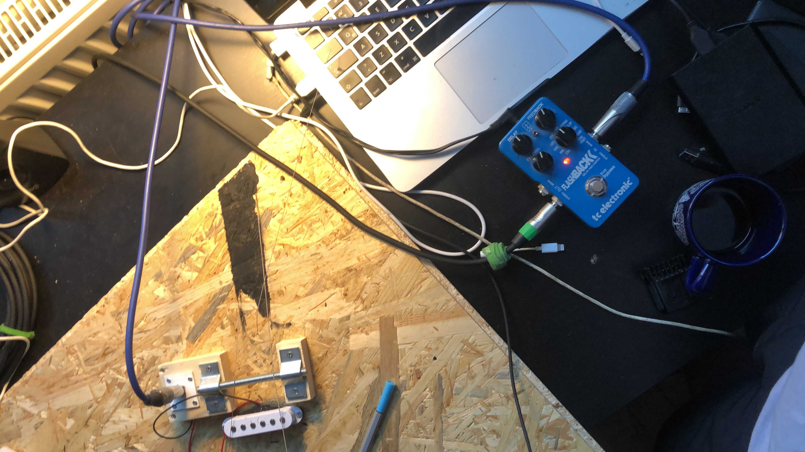
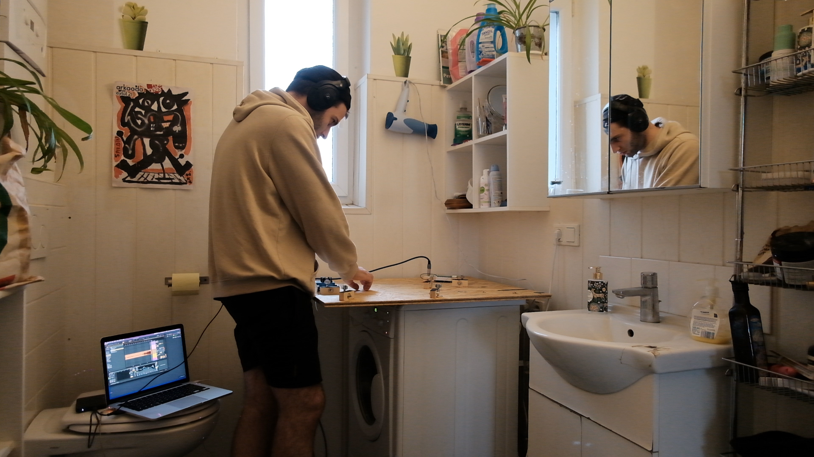

Exploring the Sound of a Working Washing Machine with an Electric Guitar
2023
Investigating the acoustic effects of placing an electric guitar on a working washing machine. If the washing machine shakes enough to vibrate the strings of the guitar, it could create a continuous sound that is altered by the vibrations of the machine. Additionally, the magnetic field of the washing machine could also create a unique sound when the guitar's pickup is placed onto it.

